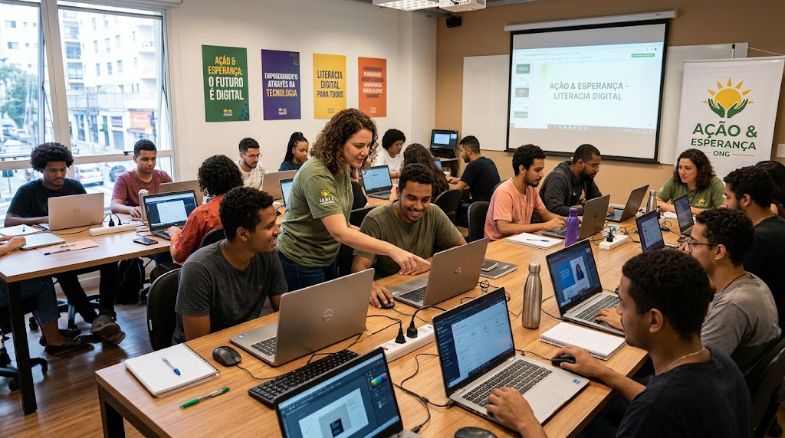

Futuro Brilhante
Oferece reforço escolar, oficinas de informática e incentivo à leitura para crianças e jovens do ensino público.
Quero AjudarDesenvolvemos iniciativas contínuas voltadas para a educação, nutrição e capacitação profissional.

Oferece reforço escolar, oficinas de informática e incentivo à leitura para crianças e jovens do ensino público.
Quero Ajudar
Programa de arrecadação e distribuição mensal de cestas de alimentos para famílias em situação de extrema pobreza.
Quero Doar100% dos recursos arrecadados são destinados à compra de suprimentos, materiais didáticos e manutenção dos centros de apoio.
Cadastre-se para Colaborar